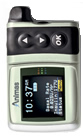
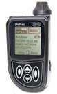
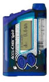
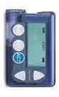
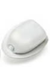
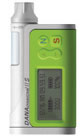

Links |
Animas |
Smiths Medical |
Disetronic |
MiniMed |
Insulet (781) 457-5000 |
Sooil USA (866) 747-6645 |
Model |
IR-2020 |
Deltec Cozmo® 1800 |
Spirit® |
Paradigm 522/722 |
OmniPod MA, US |
DiabecareIIS CA, US |
|  |  |  |  |  |  | |
Dim. [mm] |
51 x 77 x 18 |
47 x 80 x 24 |
81 x 56 x 20 | 522: |
pod: 41x61x18 pda: 66x110x26 |
46 x 77 x 19 |
Volume |
4.33 ci |
5.06 ci |
522: 4.9 ci |
Pod: 2.7 ci PDA: 11.5 ci |
4.3 ci 67 cc |
|
Weight [oz] |
3.1 |
2.7 |
2.8, 4.8 with batt, full cartridge, inf set | 3.5 oz |
OP: 1.2 oz (full res.) PDM: 4.0 oz (w/ batteries) |
1.9 oz |
Reservoir Size |
200u plastic |
300u plastic |
315u | 176 or 300u pl |
200u | 300u plastic |
Connection |
Luer lock |
Luer lock |
Luer lock | Proprietary |
Built-in | Proprietary |
Screen Size |
992 sq mm |
870 sq mm |
774 sq mm |
1,848 sq mm on PDA controller | 595 sq mm | |
Colors |
blue, silver, black, pink glow, limelight |
Tropical green, pacific blue, volcano black |
Blue, with 30 pump skins in colors and styles | clear, smoke, blue, purple |
white |
Black, Gray, Pink, Green, White |
Basal |
0.025u |
0.05u |
0.1u from 0.1 to 25.0 u/hr | 0.05 u |
0.05 u u/hr, up to 30 u/hr | 0.1 u/hr or 0.01 u/hr |
Total |
12/day |
48/day |
24/day | 48/day |
48/day | 24/day |
Basal |
4 |
4 |
5 | 3 |
7 | 4 |
Basal |
30 min |
30 min |
60 min | 30 min |
3 min | 60 min |
Basal |
every 3 min |
every 3 min |
every 3 min | varies, 0.6 u/hr = every 10 min |
Every 4 min | |
Temp |
-90% to +200% in increments of 10% for 0.5 to 24 hours (30 min increments) |
in 0.05 u increments, or -10% to +150% in increments of 5% for 0.5 to 72 hours (30 min increments) |
in 10% increments from 0% to 200%, and 15 min to 24 hr | +/- 0.1 u increment as single basal rate for 0.5 to 24 hrs or as % of current basal |
% or u/hr (1-12 hrs, in 30 min increments) | 10% increments from 0% to 200% and up to 12 hours |
Bolus |
0.05 visual or audio, 0.1, 1.0, 5.0 audio |
0.05, 0.1 visual, 0.05, 0.1, 0.5, 1.0 visual or audio |
0.1, 0.2, 0.5, 1.0, 2.0 | 0.1 visual, 0.5 or 1.0 visual or audio, remote extra |
0.05, 0.1, 0.5, 1.0u | 0.1, .05, 1.0u |
Carb and Correction Factors |
yes, manual entry, assist from EZManager Plus Palm software |
yes, manual carb, BG from attached CoZmonitor meter or manual entry |
yes, manual carb, BG from Accu-Chek BG monitor | yes, manual carb, BG direct from BD meter or manual entry |
yes |
Yes, manual carb |
Bolus Type |
units or carbs: standard, extended, combination |
units or carbs: standard, extended, combination |
quick, scroll, extended, multiwave | units or carbs: standard, extended, combination |
Meal, correction, meal & correction; normal, extended, combination | Normal, extended, combination |
1 u Bolus Duration |
1 or 4 sec |
adjustable, 1-5 |
5 sec | 30 sec. |
40 sec. | 12 sec |
Battery |
AA lithium x 1 |
AAA x 1 |
AA x 1 Alkaline or Rechargeable | AAA for pump, A23 for remote |
AAA x 2 (PDA) | 1/2 AA 3.6v lithium |
Battery Life |
6-8 weeks |
3 weeks |
4 week | 3 weeks |
4 weeks | 8-10 weeks |
Motor |
DC |
DC |
DC | DC |
stepper | DC |
Memory |
non-volatile: 600 bolus, 270 basals, 120 daily totals, 30 alarms, 60 primes |
non-volatile: 90 days (4000 events) of basals, carb boluses, correction boluses, alarms |
non-volatile: 90 days (4,500 events); history recall of last 30 boluses, alerts, daily insulin totals, and temporary basal rate increases | 4000 events, volatile (basal & history loss can occur): 24 boluses, 7 day totals |
90 days of data (up to 5400 records) | Last 500 boluses, primes and daily totals. Last 100 alrams (all time and date stamped) |
Software, Download |
ezManager Plus and IR kit, cradle & software at Animas |
CoZmanager: IR port, program pump, personalize basal patterns, alerts, home screens, and download pump history |
Pocket Compass with Bolus Calculator , insulin pump configuration software, IR Communication Port | Medtronic CareLink® Therapy Management System and ParadigmPAL™ 3.0 Software at Medtronic |
none | none |
Water? |
12 ft for 24 hrs |
waterproof IPX8, Surface swimming, 8 feet for 30 minutes |
water proof for up to an hour | splash resistant |
watertight | IPX8 – 1 hour up to 3 ½ ft |
Extra |
clip-on covers, personalized carb and correction factors, tracks residual bolus insulin |
Integrated Freestyle |
choice of standard, advanced or custom selectable user menus, icon- and menu-driven programming, backlit display, reversible display screen, 12 languages, audible or vibrating bolus confirmation and alerts. |
remote, vibration, colors, backlight, extended bolus, auto off |
backlight, reminders & alerts, child lock, integrated Freestyle meter, 1000 common foods in PDA | Carb Counting Program, Active insulin on board multiple bolus options, PIN# programming and access to functions including daily maximums and custom settings for healthcare professions. Backlight, icon menu. Auto display of remaining insulin and remaining battery life. Lock-out feature with PIN unlock. Twelve languages |
Guarantee |
4 years |
4 years |
4 years | 4 years |
4 years | 4 years |